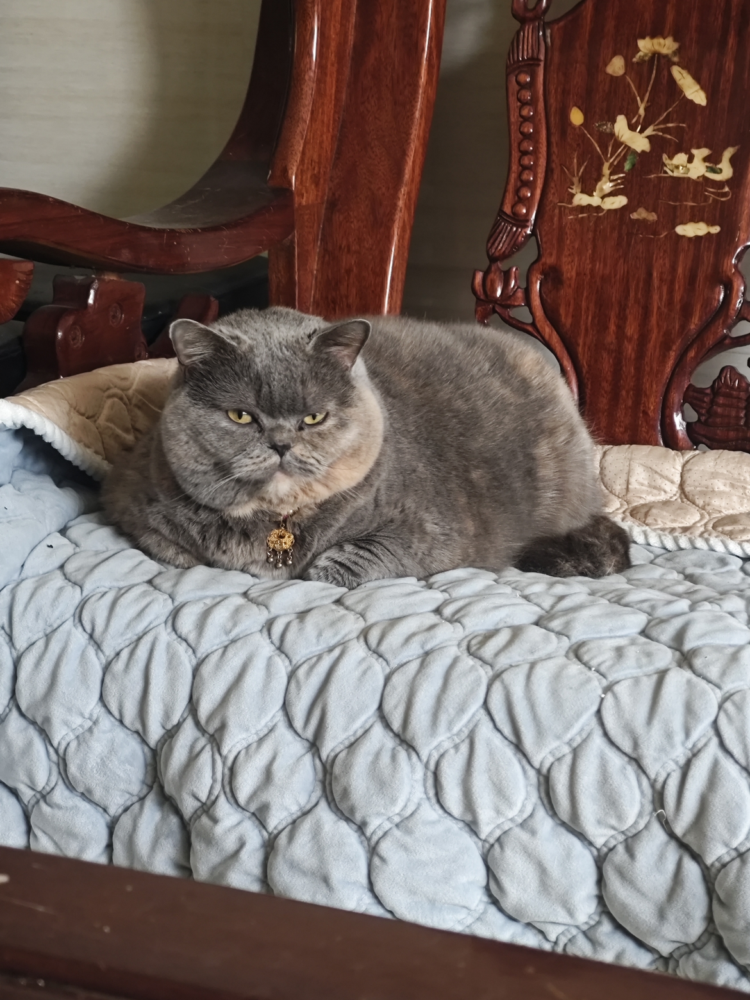
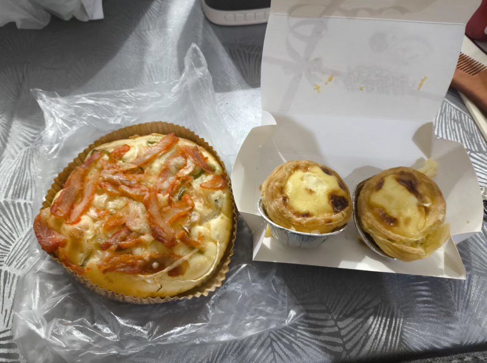
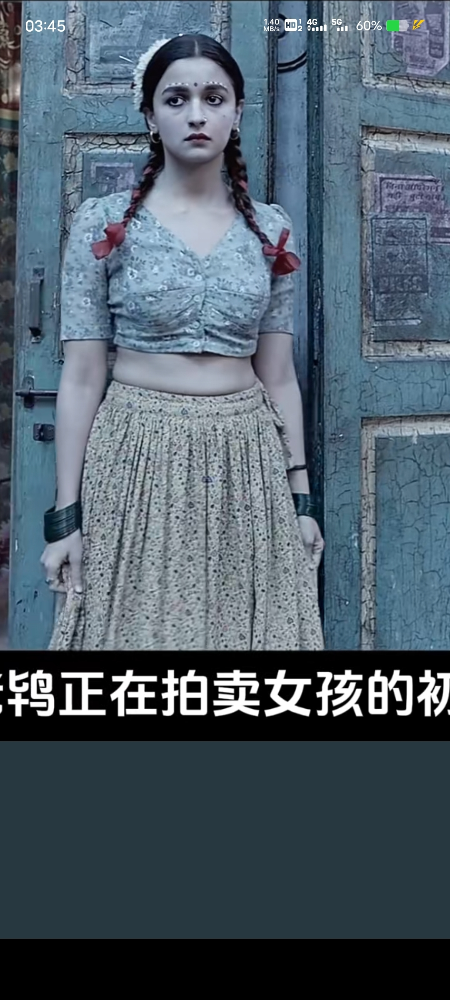
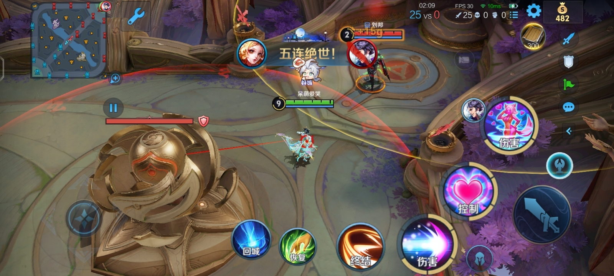
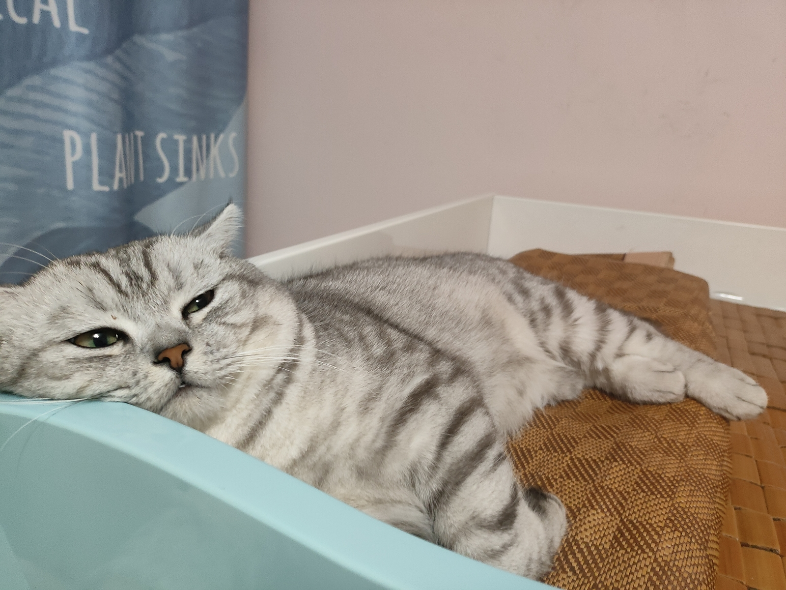
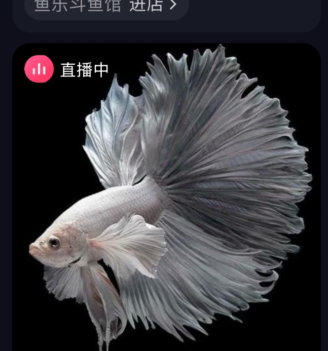
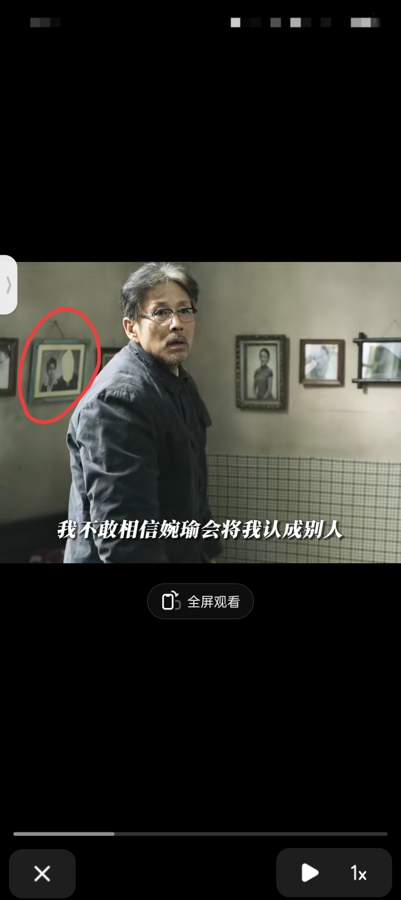

小屁孩才喜欢瘦不拉几[微笑] 真男人都喜欢肉肉的[看]
[九转大肠]谁懂啊 它还是个女孩子 
大家觉得像吗[捂脸]
在写字楼里，有一座道观，一群警察上去被团灭。这段真的震惊到我了
他们朝我扔玉牌，我对玉牌拜三拜
他们朝我扔粑粑，我张开我的小嘴巴
？[黑脸] 
他们管我叫妈妈～ 我带他们去打瓦～
粑粑还能干嘛呢[憨笑]
你知道的我很少站在杨坤这边
我的700能到我手里么？
原本我以为自已是一介布衣，现在变成了一介塑衣了[流泪]
这个电影真的可以封神了，这女孩才是真正女权的实践者，她充满智慧，拥有绝对的力量，她不会用任何一种方式妥协
这部电影有两个女孩比较大的跨越都是因为一个男人帮了他，没有理由的帮了他，我第一次看的时候很不舒服，觉得电影女性主义的背后暗戳戳的还是在宣扬男性的权力。不过后面我想通了，在男强女弱的时代要求一个女性完全不借助任何外力本身就是一种不公，只要她成长起来后将力量反哺于女性就是好的
在印度种族歧视特别严重的这样一个国家 这个女人真的是太不容易了 真人真事改编的很不错 女主角也拍出来了原主的精神
一个有独特思想和智慧坚强的女人无论身处何处她都是与众不同独特的存在，那些好的品质永远都刻在这样的女性身上，无论何处都散发着光茫！
甘谷是地狱之火淬炼出的凤凰涅槃。虽然命运给她的炼狱是残酷的，她却在这样卑劣和低下的环境里，依然绽放出女性魅力的光辉[赞][赞][赞]。
女孩谈男朋友一定要谨慎啊，千万不要背弃父母跟男朋友私奔。我就是这样啊，失去第一次不说还被他卖到发廊，后面辗转卖了几个。还好后面遇到一个好的客人他悄悄把我带出来，我才跑了。后面结婚后发现怀不了宝宝，花光了我所有钱也没治好，后面没办法离婚了。到现在只敢自己一个人生活。姐妹们，谈朋友一定要谨慎啊，真的好恐怖的，有些女孩子被卖去还会染上毒瘾，真的一辈子都走不出来
看，正常女生都是这样肚子有点肉的，而不是现在网上看到的病态瘦 
最主要她是真实故事改编，真的让人钦佩又震撼心灵！
我真是看到最后，才明白甘古拜在坚持什么，她早就可以走，但她选择的是忍受，并屈服，只因为有女性在等她
好喜欢那几句，姑娘们虽然出卖肉体，但是内心与思想与无比纯净，他们除了从事在众人眼中不道德的工作之外，其他都是恪尽职守规规矩矩，而那些外界做着正常工作的人却没有基本的仁义道德
她是被“爱情”出卖，有些人却想用“爱情”再次捆绑她
还是女生的解说听起来舒服，没有那些无聊的玩笑和低俗的话语
讲的真的很好，没有调笑和讽刺，包括评论区也是
她与陌生男人的成人礼比任何宗教仪式都接近生命的本质! 绝啊，这个解说
讽刺的是……死了都要把腿绑紧………
我看过好几遍这个电影的解说了，这是我第一次知道甘谷是为了最求梦想被骗离家的[憨笑]他们都说是私奔[赞]
可是最后我感觉好可惜，她去时候又变回了原来的样子[流泪]她做出的努力又白费了[流泪]只
这个解说真的很不错[捂脸]
爷爷奶奶才需要早教，谁能教好他们就能教好孩子了，要不说一百遍没用[捂脸]
狂飙在内容，尺度，高度，演技等等各方面在人民的名义面前都是小打小闹
人民名义如果没有黄毛的戏那可以跟雍正王朝一个档次。全程无尿点
歌名叫习惯失恋 唱的却是要爱下去的决心
刘邦你等着吧[愉快]
项虞 羽姬[流泪][流泪][流泪]
我听说的霸王别姬的意思是 项羽上战场前把虞姬的头砍了别在自己腰间[听歌]
所以王者荣耀才给他们两个设置了免伤，对吗？
学到这课语文老师教的是刘邦是个成大事的人 项羽是个柔情寡断不成大事的人[憨笑]
刘邦找死呢[憨笑] 
会开了两个小时，万斯的凳子都还是凉的
削尖了脑袋往上挤，这句话终于具象化了
他还嘟嘴了😗
没有人发现这个女生是等他把牌撤下来的时候才猛地上去亲了一口吗？
普通的kiss不爱看，就爱看这种[舔屏]
它多懂事儿呀，找了个最便宜的抓[捂脸]
23年养的 养到现在我换了6个笔记本[微笑] 
走的这么霸气，他知道自己是小短腿吗？[捂脸][捂脸][捂脸]
太漂亮了，郭敬明我们要这个机位！
啊，像这个[流泪] 
正文如果没有这一幕的话，小四你等掉吧[憨笑][强壮]
以爱为营教会了我路透这么好看，证明导演没有从这个角度拍
哪有赌徒天天输，哪有孩子天天哭
原来失忆这样俗套的设定，也可以写得如此清新。[叹气]悲伤仿佛揉碎在每个动作每个眼神中，没有激烈的冲突，又能够感受到来自四面八方的悲哀。
她可能每天都去等[流泪]，二十多年等待让她不敢相信他真的能回来，所以她潜意识觉得他不会回来了，人老了也就更不记得了。
《她深爱着我却不认识我了》[流泪]
怎么现在全是第一人称，我要疯了[微笑]
“我几乎忘记了他的一切。甚至就连他的相貌都忘记了”“我只记得他的名字”“我只记得”“我爱他”
原著里，婉瑜为了救焉识，用身体去和戴交易，她觉得自己脏，可是一身书生气的焉识干净。
天啊[流泪] 
看看电影就好了 别看小说 小说里男主出轨了两回[憨笑]
这个电影不是恐怖，这个是反人类，第一诫的导演应该和迷雾，伊甸园导演一起用机枪扫射
第一诫，这鬼片有毒，凭啥坏人就能变鬼，好人就变不了，看的我上火[泪奔]
这个电影是我唯一不敢重复看的恐怖片，因为面对这种无规则杀戮的👻太无力了
中午12点看到的，洋气最盛
我是李白我牛逼，坐完高铁坐飞机，日行十万八千里，杜甫拿啥跟我比
Read more: